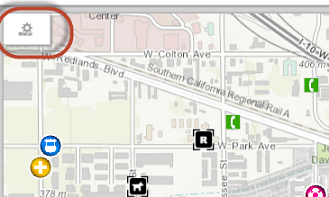
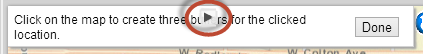

Hide Table of Contents
Hide Table of Contents
 Tutorials
About the API
Work with the API
Graphics and feature layers
Popups and Info Windows
Geoprocessor
Operations Dashboard
Create extensions
Mobile
ArcGIS Server Services
References
What's New archive
Tutorials
About the API
Work with the API
Graphics and feature layers
Popups and Info Windows
Geoprocessor
Operations Dashboard
Create extensions
Mobile
ArcGIS Server Services
References
What's New archive
Legacy: This topic discusses extending operation views created using the Windows version Operations Dashboard for ArcGIS. This version of the application has been moved to Mature Support status. To learn more about the latest web-based version, see Operations Dashboard for ArcGIS.
A map tool in an operation view allows users to interact with a map widget. For example, the measure tool allows users to find the length or area of a shape that they define on a map widget. In this tutorial, you'll develop, style, and test a buffer map tool. The map tool calculates and displays buffer rings around a point drawn on the map.

Before you begin, you must set up your development environment for Windows Operations Dashboard and prepare it to run in developer mode.
Create files for the map tool
In the extensions folder that you created in the Set up a development environment tutorial, create a folder called bufferMapTool, and create the following files in that folder:
- buffer.json—The manifest file for the extension. A JSON file that describes how the extension should be activated and used in an operation view.
- buffer.html—An HTML5 file that represents the UI of the map tool that will load when the tool finishes initialization.
- bufferMapToolTemplate.html—An HTML fragment included in the buffer.html file. The template contains details of the map tool’s UI, and its business logic is included in the BufferMapTool.js file.
- BufferMapTool.js—A JavaScript file that defines the buffer map tool class, which will be created as a Dojo widget, or a dijit (the term "widget" here has no association with the concept of widgets in operation views). A map tool dijit is created each time a user clicks on it from the map toolbar.
- style.css—A CSS file that defines the style of the map tool.
- icon.png—A 16px by 16px PNG (or JPG) image file that will be the icon of the map tool.
- pushpin.png—A PNG (or JPG) image file that indicates the location the user clicked on the map. The recommended size of the file is 15px by 30px.
Note: You can assign different names to the above files.
Configure the manifest
Open the buffer.json file, or the manifest file, in your IDE and add the following text:
{
"type": "Map Tool",
"title": "Buffer Map Tool",
"description": "A map tool that creates buffers from a clicked point",
"usePortalServices": true,
"runtime": {
"iconPath": "icon.png",
"path": "buffer.html",
"viewType": "toolbar"
},
"credits": "By Esri (http://www.esri.com)"
}
Note:
- The type property determines the type of the extension, in this case, the extension is a map tool. Make sure the capitalization and the spelling of the words "Map Tool" are exactly the same as shown in the sample above, otherwise the tool will not load.
- The usePortalServices property indicates whether an extension will use any utility services
such as the geometry service configured for the organization.
Note: For this map tool to work, this property must be set to true.
- The runtime object describes the icon (icon.png) and the UI (buffer.html) of the map tool. Their paths are relative to that of the manifest file. The "viewType" property indicates the type of map tool. In this case, the default map toolbar is replaced with a custom toolbar.
To learn more about the manifest file properties, see Manifest file.
Create the user interface
- Open the buffer.html file, and add the following text to set up the basic structure of the HTML5 file:
<!DOCTYPE html> <html lang="en"> <head> <meta charset=utf-8"> <link rel="stylesheet" type="text/css" href="style.css"> </head>
<body>
</body> </html> - Between the
<body>tags, create a<div>and add a data-dojo-type attribute with the value extension/BufferMapTool. This attribute is used to instantiate an extension/BufferMapTool object that comes from the buffer map tool dijit you'll create in the BufferMapTool.js file.<body>
<div data-dojo-type="extension/BufferMapTool"></div>
</body> - Open the bufferMapToolTemplate.html file, and add the following HTML fragment. It defines the UI of the buffer tool dijit. The UI consists of a label and a Done button. The button has a data-dojo-attach-event attribute that attaches the button to the deactivateMapTool method that will be defined in the BufferMapTool.js file.
<div class="table">
<div class="table-cell labelContainer">
Click on the map to create three buffers for the clicked location.
</div>
<div class="table-cell buttonContainer">
<button data-dojo-attach-event="onClick:deactivateMapTool">Done</button>
</div>
</div>
Add programming logic
- Open the buffer.html file and insert the following
<script>block before the closing<body>tag. The script block contains the dojoConfig object that will load the buffer tool dijit. To learn more about dojoConfig, see Dojo Toolkit documentation.Note: Within the paths object, the URI of the extension folder is referenced as "extension". This is used to construct the relative path to the buffer tool dijit (that is, extension/BufferMapTool) in the dojo-data-type attribute of the<script> var dojoConfig = { async: true, paths: { "extension": location.pathname.replace(/\/[^/]+$/, '') } }; </script><div>element in this file. - Under the
<script>block from the previous step, add another<script>block referencing the ArcGIS API for JavaScript. You must load the dojoConfig before loading the ArcGIS API for JavaScript, otherwise the dojoConfig will be ignored.<script src="//js.arcgis.com/3.26/"></script> -
Inside of another
<script>block, add the Dojo parser:<script> require(["dojo/parser","dojo/domReady!"] , function(parser){ parser.parse(); }); </script> - Open the BufferMapTool.js file, and add a
definefunction. This will be used to define the buffer map tool dijit. This function loads the dependent modules and passes the modules as parameters in a callback function.define([ "dojo/_base/declare", "dojo/_base/lang", "dijit/_WidgetBase", "dijit/_TemplatedMixin", "esri/opsdashboard/MapToolProxy", "esri/tasks/BufferParameters", "esri/tasks/GeometryService", "esri/Color", "esri/symbols/SimpleLineSymbol", "esri/symbols/SimpleFillSymbol", "esri/symbols/PictureMarkerSymbol", "esri/graphic", "dojo/text!./bufferMapToolTemplate.html" ], function (declare, lang, _WidgetBase, _TemplatedMixin, MapToolProxy, BufferParameters, GeometryService, Color, SimpleLineSymbol, SimpleFillSymbol, PictureMarkerSymbol, Graphic, templateString ) { }); - Declare a class name BufferMapTool. The second parameter is an array of super
classes that are inherited by the buffer class. The third parameter is an object that contains the methods
to be called throughout the lifecycle of the class.
... "dojo/text!extension/bufferMapToolTemplate.html" ], function (declare, lang, _WidgetBase, _TemplatedMixin, MapToolProxy, BufferParameters, GeometryService, Color, SimpleLineSymbol, SimpleFillSymbol, PictureMarkerSymbol, Graphic, templateString ) { return declare("BufferMapTool", [_WidgetBase, _TemplatedMixin, MapToolProxy], { }); }); - In the BufferMapTool class, load the bufferMapToolTemplate.html into the templateString as an inline string.
return declare("BufferMapTool", [_WidgetBase, _TemplatedMixin, MapToolProxy], { templateString: templateString, }); - Insert the constructor function under the template string.
You have now created the following variables in the constructor:
constructor: function () { // The buffer parameters this.bufferParams = new BufferParameters(); this.bufferParams.unit = GeometryService.UNIT_METER; this.bufferParams.distances = [500, 1000, 2000]; // Create the graphic for the push pin var iconPath = location.href.replace(/\/[^/]+$/, '/'); var symbol = new PictureMarkerSymbol(iconPath + "pushpin.png", 15, 30); symbol.yoffset = 10; this.pushPinGraphic = new Graphic(null, symbol); // Create the buffer graphics var outlineSymbol = new SimpleLineSymbol(SimpleLineSymbol.STYLE_SOLID, new Color("#000000"), 1); var bufferSymbol = new SimpleFillSymbol(SimpleLineSymbol.STYLE_SOLID, outlineSymbol, null); this.bufferGraphics = []; for (var i = 0; i < 3; i++) { this.bufferGraphics.push(new Graphic(null, bufferSymbol)); } },- bufferParams—An object that captures the configuration options of the buffer rings to be created, such as the radii of the buffers from the point drawn on the map.
- pushPinGraphic—A graphic for the point drawn on the map.
- bufferGraphics—Three graphics for the buffer rings.
- After adding the constructor function, insert the hostReady callback function. This callback will be
invoked when Operations Dashboard signals to the extension that the relationship between them is
established.
This callback performs the following:
hostReady: function () { //Set up the UI of the map tool and create the graphics layer //when the host (Operations Dashboard) is ready // Retrieve the geometry service specified for the organization // Note: The buffer.json manifest file must have the "usePortalServices" set to true // in order for the geometry service (and any other helper services) to be retrieved if (!this.portalHelperServices || !this.portalHelperServices.geometry) { alert("Cannot get the geometry service required for creating buffers."); this.deactivateMapTool(); return; } // Update the buffer params with the target map widget spatial reference this.bufferParams.outSpatialReference = this.mapWidgetProxy.spatialReference; // Setup a geometry service this.geometryService = new GeometryService(this.portalHelperServices.geometry.url); // Update the size of the user experience this.setDisplaySize({ width: Math.min(this.availableDisplaySize.width / 2, 400), height: 40 }); // Creates two graphics layers to control the order of draw buffers below the pushpin. return this.mapWidgetProxy.createGraphicsLayerProxy().then(lang.hitch(this, function (graphicsLayerProxy) { this.bufferGraphicsLayerProxy = graphicsLayerProxy; return this.mapWidgetProxy.createGraphicsLayerProxy().then(lang.hitch(this, function (graphicsLayerProxy) { this.pushPinGraphicsLayerProxy = graphicsLayerProxy; // Activate the drawing activity when the graphics layer is ready this.activateMapDrawing({geometryType: "point"}); })); })); },- Gets the geometry service from the ArcGIS organization, which will be used to calculate the buffer rings.
- Sets the outSpatialReference in the bufferParams object.
- Specifies the dimension of the map toolbar.
- Calls the map widget's createGraphicsLayerProxy function twice to create two temporary graphics layers, one representing the clicked point and one representing the buffer rings.
- After creating the hostReady callback, add an availableDisplaySizeChanged function. If the width of the
map widget associated with the map tool changes, the width of the map tool dijit will be readjusted.
availableDisplaySizeChanged: function (availableSize) { // Update the size of the user experience this.setDisplaySize({ width: Math.min(availableSize.width / 2, 400), height: 40 }); }, - Add the mapDrawComplete callback function. This function will be invoked when a user draws a point on the
map. It clears any graphics that were previously created after drawing a point, and passes
the geometry of the clicked point to the showPushPin and
showBuffers functions. The graphics of the pushpin and the buffer rings display on the map.
mapDrawComplete: function (geometry) { // When the drawing activity has been performed by the user, use the resulting geometry // to calculate the buffer rings and display them on the map if (!geometry) return; // Clear the graphics layer. this.bufferGraphicsLayerProxy.clear(); this.pushPinGraphicsLayerProxy.clear(); // Immediately show a feedback for the user this.showPushPin(geometry); // Starts the buffering process this.showBuffers(geometry); }, - Add the showPushPin function. This function sets the geometry of the pushPinGraphic using the point
drawn on the map and updates the pushpin's graphicsLayer.
showPushPin: function (geometry) { // Update the position of the push pin graphic this.pushPinGraphic.setGeometry(geometry); // Update the host graphics layer this.pushPinGraphicsLayerProxy.addOrUpdateGraphic(this.pushPinGraphic); }, - Add the showBuffers function. This function calls the buffer function of the geometryService object
by passing in the buffer parameters and a callback function. The buffer function calculates the
geometries of the buffer rings. These geometries are used in the callback to update the buffer graphics and
their graphics layer.
showBuffers: function (geometry) { // Use the geometry service to calculate 3 buffer rings around the clicked point // Update the buffer params this.bufferParams.geometries = [geometry]; // When the buffer rings have been calculated, call this.onBufferResult to update the graphics this.geometryService.buffer(this.bufferParams, lang.hitch(this, function (geometries) { if (!geometries || geometries.length === 0) return; // For each of the buffer geometries, update the buffer graphics for (var i = 0; i < geometries.length; i++) { this.bufferGraphics[i].setGeometry(geometries[i]); } // Update the host graphics layer this.bufferGraphicsLayerProxy.addOrUpdateGraphics(this.bufferGraphics); })); }, - Finally, add the deactivateMapTool function. This tear-down function will be
called to deactivate the map drawing session and to destroy the two graphics layers when a user clicks the Done
button defined in the bufferMapToolTemplate.html file.
Note: It is important to destroy any graphics layers that were created in this function.Your code for the BufferMapTool.js file should look like this:deactivateMapTool: function () { // Deactivate the map tool when the Done button is clicked // Clean up then deactivating this.deactivateMapDrawing(); this.mapWidgetProxy.destroyGraphicsLayerProxy(this.bufferGraphicsLayerProxy); this.mapWidgetProxy.destroyGraphicsLayerProxy(this.pushPinGraphicsLayerProxy); // Call the base function this.inherited(arguments, []); }define([ "dojo/_base/declare", "dojo/_base/lang", "dijit/_WidgetBase", "dijit/_TemplatedMixin", "esri/opsdashboard/MapToolProxy", "esri/tasks/BufferParameters", "esri/tasks/GeometryService", "esri/Color", "esri/symbols/SimpleLineSymbol", "esri/symbols/SimpleFillSymbol", "esri/symbols/PictureMarkerSymbol", "esri/graphic", "dojo/text!./bufferMapToolTemplate.html" ], function (declare, lang, _WidgetBase, _TemplatedMixin, MapToolProxy, BufferParameters, GeometryService, Color, SimpleLineSymbol, SimpleFillSymbol, PictureMark-erSymbol, Graphic, templateString) { return declare("BufferMapTool", [_WidgetBase, _TemplatedMixin, MapToolProxy], { templateString: templateString, constructor: function () { // The buffer parameters this.bufferParams = new BufferParameters(); this.bufferParams.unit = GeometryService.UNIT_METER; this.bufferParams.distances = [500, 1000, 2000]; // Create the graphic for the push pin var iconPath = location.href.replace(/\/[^/]+$/, '/'); var symbol = new PictureMarkerSymbol(iconPath + "pushpin.png", 15, 30); symbol.yoffset = 10; this.pushPinGraphic = new Graphic(null, symbol); // Create the buffer graphics var outlineSymbol = new SimpleLineSymbol(SimpleLineSymbol.STYLE_SOLID, new Color("#000000"), 1); var bufferSymbol = new SimpleFillSymbol(SimpleLineSymbol.STYLE_SOLID, outlineSymbol, null); this.bufferGraphics = []; for (var i = 0; i < 3; i++) { this.bufferGraphics.push(new Graphic(null, bufferSymbol)); } }, hostReady: function () { //Set up the UI of the map tool and create the graphics layer //when the host (Operations Dashboard) is ready // Retrieve the geometry service specified for the organization // Note: The buffer.json manifest file must have the "usePortalServices" set to true // in order for the geometry service (and any other helper services) to be retrieved if (!this.portalHelperServices || !this.portalHelperServices.geometry) { alert("Cannot get the geometry service required for creating buffers."); this.deactivateMapTool(); return; } // Update the buffer params with the target map widget spatial reference this.bufferParams.outSpatialReference = this.mapWidgetProxy.spatialReference; // Set up a geometry service this.geometryService = new GeometryService(this.portalHelperServices.geometry.url); // Update the size of the user experience this.setDisplaySize({ width: Math.min(this.availableDisplaySize.width / 2, 400), height: 40 }); // Creates two graphics layers to control the order of draw buffers below the push-pin. return this.mapWidgetProxy.createGraphicsLayerProxy().then(lang.hitch(this, function (graphicsLayerProxy) { this.bufferGraphicsLayerProxy = graphicsLayerProxy; return this.mapWidgetProxy.createGraphicsLayerProxy().then(lang.hitch(this, function (graphicsLayerProxy) { this.pushPinGraphicsLayerProxy = graphicsLayerProxy; // Activate the drawing activity when the graphics layer is ready this.activateMapDrawing({geometryType: "point"}); })); })); }, availableDisplaySizeChanged: function (availableSize) { // Update the size of the user experience this.setDisplaySize({ width: Math.min(availableSize.width / 2, 400), height: 40 }); }, mapDrawComplete: function (geometry) { // When the drawing activity have been performed by the user, use the resulting geometry // to calculate the buffer rings and display them on the map if (!geometry) return; // Clear the graphics layer. this.bufferGraphicsLayerProxy.clear(); this.pushPinGraphicsLayerProxy.clear(); // Immediately show a feedback for the user this.showPushPin(geometry); // Starts the buffering process this.showBuffers(geometry); }, showPushPin: function (geometry) { // Update the position of the push pin graphic this.pushPinGraphic.setGeometry(geometry); // Update the host graphics layer this.pushPinGraphicsLayerProxy.addOrUpdateGraphic(this.pushPinGraphic); }, showBuffers: function (geometry) { // Use the geometry service to calculate 3 buffer rings around the clicked point // Update the buffer params this.bufferParams.geometries = [geometry]; // When the buffer rings have been calculated, call this.onBufferResult to update the graphics this.geometryService.buffer(this.bufferParams, lang.hitch(this, function (geometries) { if (!geometries || geometries.length === 0) return; // For each of the buffer geometries, update the buffer graphics for (var i = 0; i < geometries.length; i++) { this.bufferGraphics[i].setGeometry(geometries[i]); } // Update the host graphics layer this.bufferGraphicsLayerProxy.addOrUpdateGraphics(this.bufferGraphics); })); }, deactivateMapTool: function () { // Deactivate the map tool when the Done button is clicked // Clean up then deactivating this.deactivateMapDrawing(); this.mapWidgetProxy.destroyGraphicsLayerProxy(this.bufferGraphicsLayerProxy); this.mapWidgetProxy.destroyGraphicsLayerProxy(this.pushPinGraphicsLayerProxy); // Call the base function this.inherited(arguments, []); } }); });
Update the style
With the map tool's UI and logic in place, add the following text to the style.css file to customize the look and feel of the extension:
html, body {
height: 100%;
width: 100%;
margin: 0;
padding: 0;
overflow: hidden;
}
.table {
display: table;
width: 100%;
height: 100%;
}
.table-cell {
display: table-cell;
vertical-align: middle;
padding: 5px;
}
.labelContainer {
font-family: Arial;
font-size: 12px;
width: 100%;
}
.buttonContainer {
width: 20px;
}
Your extension is now ready for testing in Operations Dashboard.
Create an operation view
- Start Operations Dashboard in developer mode, and sign in to your ArcGIS organization as either a publisher or an administrator.
- Create a single-display operation view and choose a map. If you create a multi-display operation view,
you can only open it in the Windows app, and you won't be able to debug your extension in the web browser.
Note: To learn more about creating an operation view, see Create an operation view in the PDF of the operation view help.
- Click the Add, remove, and configure map tools button at the upper left corner of the map. The
Configure map tools dialog box displays.

- Click the Custom button to display the custom map tools. While in developer mode,
your extensions can be identified by a red bounding box to help you distinguish them from the extensions created
for the production environment.

-
Click the check box next to the buffer map tool, and click Close.
The map tool is now included in the map toolbar.
- Click the buffer tool on the map toolbar. An instance of the buffer tool dijit will be created and the HTML template will load.
- Click anywhere on the map to display buffer rings around the point you clicked.
Debug your map tool
If you need to debug your extension, you can use the Operations Dashboard extension debugger.
- Click the Debug button at the top of the buffer map toolbar to launch the debugger.

Tip: You can also click Dev Mode in the upper right corner of the app, and click Open Debug Tool to launch the debugger.
- Using the debugger, inspect the UI elements of the buffer.html file, or set break points to
step through the business logic in the BufferMapTool.js file.
Note: The URL displayed at the top of the debugger window starts from localhost:<port number> because the extension is running from a local server.

Tip: If you make a change to the HTML or JavaScript files during debugging, you can click the Refresh button at the upper left corner of the debugger to see the update. However, if you make any changes to the manifest, you will need to close and reopen the operation view.
To debug your extension using the web browser, complete the following steps:
- Save your operation view.
- Click Dev Mode in the upper right corner and choose Open in Browser.

The operation view will open in your default browser.
- Use the built-in debugging tool of your browser to debug your map tool.
Note: Since you're hosting your extension in the local server, you need to keep the Windows app and the local server running.